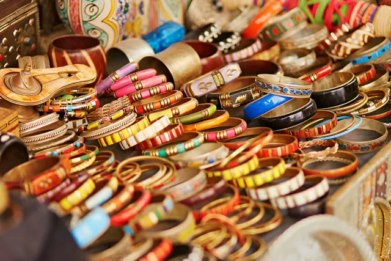

Nuestro negocio
Celebramos el legado de África
En Denda, creamos joyería africana de oro que honra la herencia cultural con diseño auténtico, producción ética y símbolos ancestrales que transmiten poder, elegancia y conexión espiritual.
Lo que hacemos diferente:
Producción ética con impacto social real.
Oro de calidad inspirado en símbolos históricos africanos.
Diseños que conectan pasado, presente y futuro.